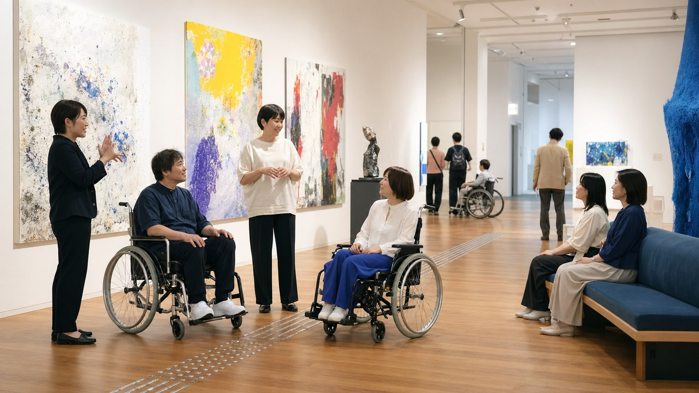
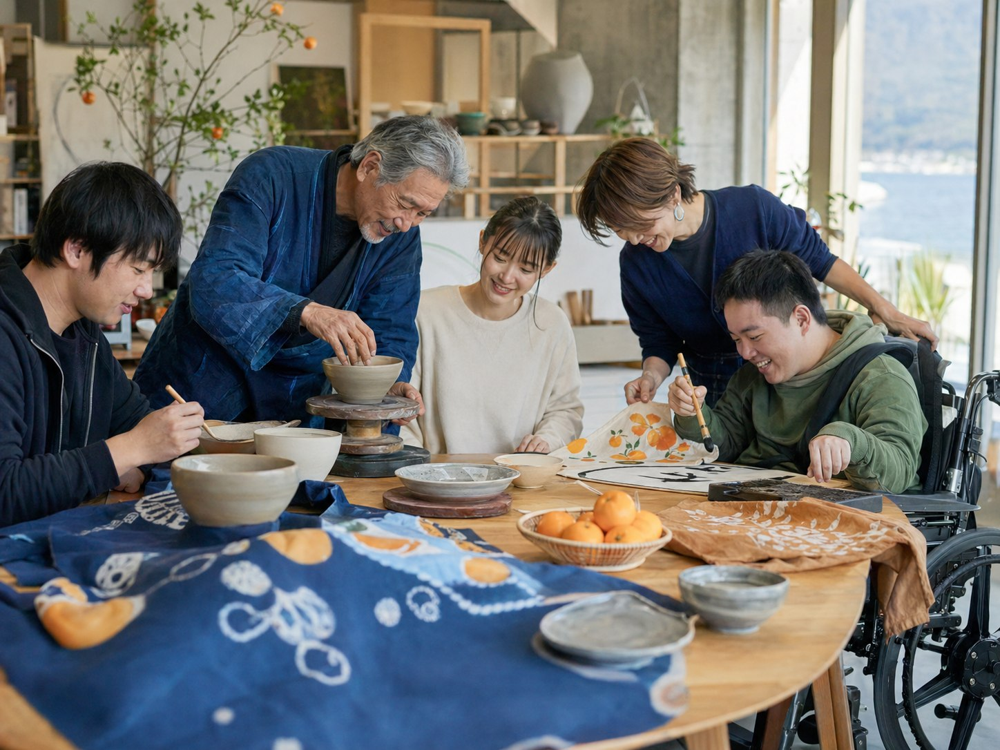
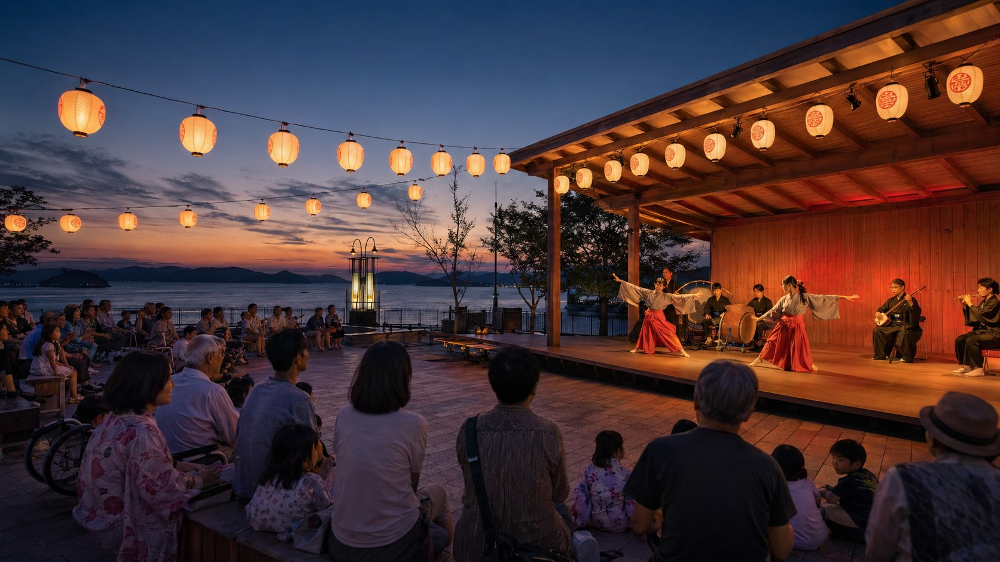

愛媛大会（仮）とは
大会の意義、基本方針、国民文化祭と全国障害者芸術・文化祭の概要を伝えます。
ページを見る
現在、緊急のお知らせはありません。会期中は変更・中止・交通規制等をここに掲出します。
重要情報を見る愛媛で開催する意義
このサイトは、世界観を伝えるブランドサイト、イベントを探せる実用ポータル、企業・団体・県民の参画を促す参加型プラットフォームを一体化する想定です。行政公式サイトとしての正確性と、文化祭らしい余白・写真表現を両立します。
愛媛らしさ


主要導線
大会の意義、基本方針、国民文化祭と全国障害者芸術・文化祭の概要を伝えます。
ページを見る日付、市町、ジャンル、バリアフリー対応などでイベントを探せるポータルです。
ページを見る出演・出品、ボランティア、応援事業、入札など、参加の入口をまとめます。
ページを見る協賛、寄付、物品・サービス協力、関心表明の入口を設けます。
ページを見る県外来訪者や県内周遊者に向け、文化祭と愛媛観光を結びます。
ページを見る情報保障、会場バリアフリー、イベント別対応、相談窓口を整理します。
ページを見る


全ページ一覧
未確定ページも、内容のイメージをつかめる仮ページとして作成しています。